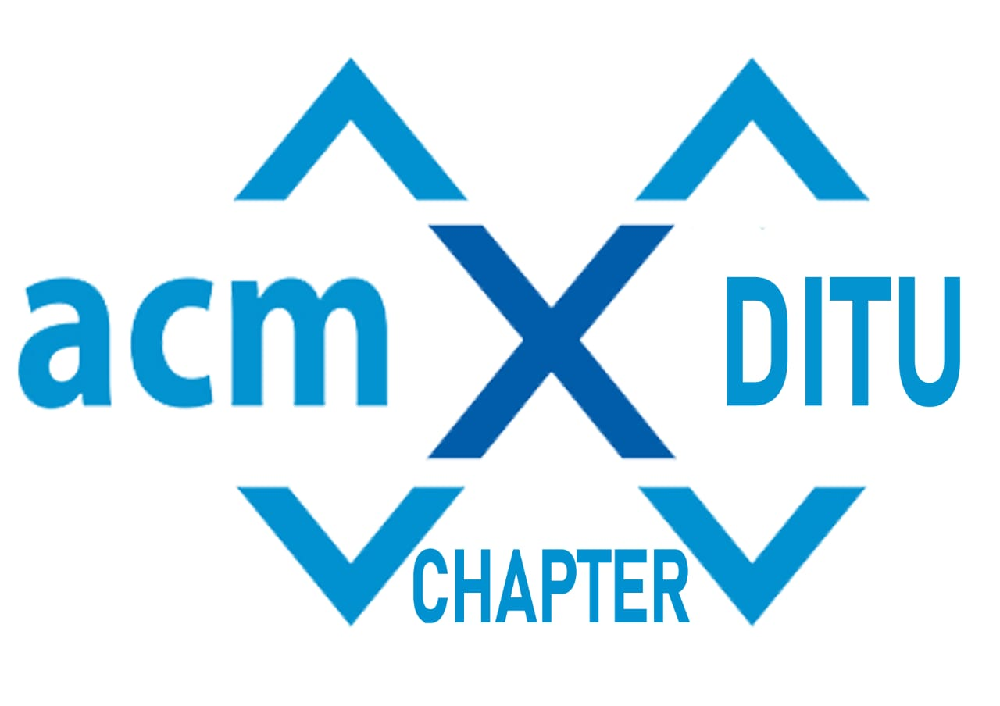

APP-A-THON
PS 1. Design an app that allows you to record calls not only from your network carrier but also your Teams, google meet and other online meeting platform. (Device should be given the required permissions).
PS 2. Design an app that allows you to take notes and make checklists. It should also have secure (password protected) folder to allow user to view confidential files.
PS 3. Develop an app which track all you personal/business transaction/expense through messages or bank statement and generates the best income tax filing way in which user saves Tons of taxes and time keeping current year best tax rebate scheme in system.
PS 4. Design an Android app depicting the corruption activities happening in the country. Your app must have a home page showing small details of each corruption related activity. In other words your home page should be listed with all corruptions activities with title, description, image (if possible). When a user clicks on each corruption activity from the home page then he should be redirected to a page that must have a well detailed description of that activity like who is the culprit, when this occurred, where it occurred, etc. You can include the about us page and contact us page and can give an option to go to these pages from the Home page.
PS 5. Develop an app which read terms and conditions for user of any website/app and highlight all the suspicious statement which user must read before agreeing to T&C.
PS 6. Development of an app for identification of crops, weeds, diseases and pest damage and nutrient deficiency symptoms. The app should have user selection features such that: Item to identify : Crop, Weed, Pest damage, disease damage, nutrient deficiency. The app should have access to the devise's camera.
PS 7. Design an App which uses augmented reality to help to visualize cloth items on human.
Constraints: it should take measurement of person and show how exactly cloth will look on person.
PS 8. Design an App which uses augmented reality to help to visualize furniture at home.
Constraints: it should take length width and height in account while making augmented reality image.